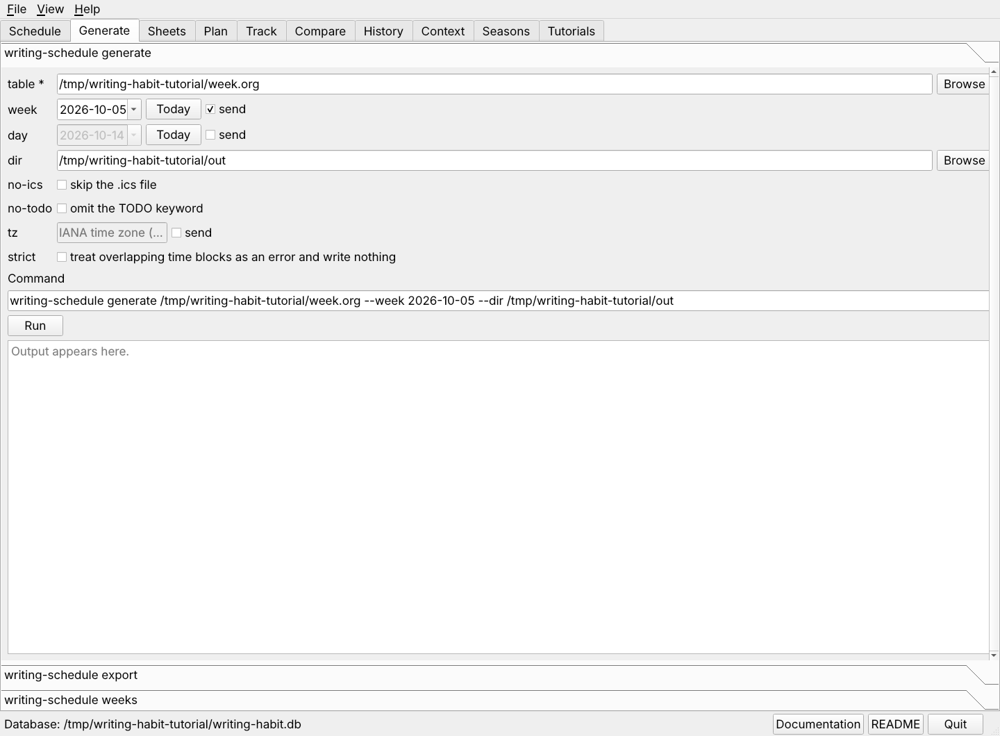

The same weekly table can become a calendar file, a dated schedule, and printable time-block sheets. These tabs need the writing-schedule package.

.org and a .ics file..ics in your calendar program to see the blocks there.Choose export instead to write only the .ics.
writing-schedule generate ~/org/writing-schedule/tables/Oct5.org \
--week 2026-10-05 --dir ~/org/writing-schedule/out
writing-schedule export ~/org/writing-schedule/tables/Oct5.org --week 2026-10-05 \
--dir ~/org/writing-schedule/out
Open the Sheets tab, set the week and the output folder, choose the engine and the format, and press Run. Each sheet opens in the Preview pane.
writing-schedule sheets ~/org/writing-schedule/tables/Oct5.org --week 2026-10-05 \
--dir ~/org/writing-schedule/sheets --format both
writing-schedule weeks --dir ~/org/writing-schedule/out